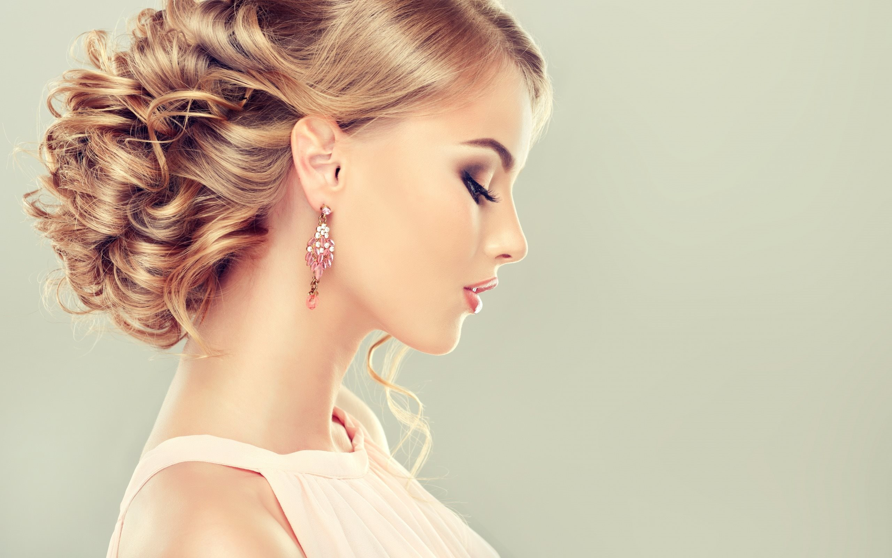

9 EASY HAIRSTYLES FOR LONG HAIR
Easy-hairstyles-for-long-hair

rope-braid-ponytail
Beautiful hairstyles aren’t always born at the salon. While your hairdresser may be a pro at creating intricate braids and buns that seemingly stay up on their own, nothing beats an easy hairstyle that looks much more difficult than it actually is. Whether you’re off to a formal occasion or simply headed to work, these cute and easy hairstyles for long hair are sure to draw compliments wherever you wear them.
10 Trendy Long Hairstyles for Women
1. Double Buns

double-buns-hairstyle
Forget about that messy topknot, this season is all about looking cool and cute with double buns.
2. Twisted Bun

twisted-bun-hairstyle
A twisted bun is a chic and easy up-do that’s perfect for formal occasions. Make it as polished or relaxed as you like by twisting hair tighter or looser.
3. Low Rolled Bun
Formal events, such as weddings, demand a polished hairstyle. While other guests may spend hundreds at the hairdressers, you can save money and time by creating this chic, low rolled bun at home.

low-rolled-bun
4. Half Bun
A half bun hairstyle creates a chic, lazy-girl look. Perfect for casual occasions, this style looks best with thick, messy waves.

half-bun-hairstyle
5. Twisted Crown
This twisted crown hairstyle is absolutely gorgeous and perfect for outdoor summer weddings.

twisted-crown-hairstyle
6. Flower Braid
This beautiful flower braid is simple at the front and detailed at the back.
flower-braid-hairstyle
7. Beach Waves
Beach waves are perfect for lazy days, but these voluminous kinky curls are unbeatable for evening events.

Beach-waves-hairstyle
8. Straight, Sleek and Shiny
Sleek, straight hair is chic once again. All you need to pull this look off is a quality straightener and a whole lot of shine.

straight-sleek-and-shiny
9. Rope Braid Ponytail
Looking polished and pretty in easy with a rope braid ponytail.

rope-braid-ponytail
HairStyle For Short and Medium Length Hair.....
Short Hairstyle #1

rope-braid-ponytail
This is a trendy hairstyle that will work for any hair length, even if you have a bob. It’s great for when you want to keep the hair out of the face or want to hide your second day hair. Here are the steps:
Create a french braid going from the front top of your head, all the way down the back of your head and secure with a hair tie that matches your hair color. Fan out the braid for a bit more volume. Take a piece of hair on the right side of your hair and wrap it around the back to hide the hair elastic. Secure with 1 or 2 bobby pins. Repeat on the other side - wrap a piece of hair around the elastic again and secure with some bobby pins. That’s it! If you like some pieces of hair left out at the front to frame your face, feel free to do that.
Short Hairstyle #2

rope-braid-ponytail
This hairstyle works well for short hair because the ponytail is low in the back and therefore you won’t have to deal with short hairs in the back falling out.
Create a side part
Start creating a french braid down the side of your head towards the back, and tie with a small elastic. Pull all your hair, including the braid, into a low ponytail in the back. Take the piece that is the braid within the ponytail, and wrap it around the base of the ponytail. This adds a creative element. Don’t worry if pieces are falling out - it just adds to that messy look! Replace the small elastic with bobby pins to secure the wrapped braid at the bottom of your ponytail. How cute is this hairstyle?! Definitely not as boring as a regular ponytail.
short hair ponytail
Short Hairstyle #3

rope-braid-ponytail
This super quick and easy hairstyle is so simple but yet is one of our favorites.
Create a middle part
Take a small section of the hair at the front of the face on your left side, and start twisting towards your ear. As you twist, add small pieces of hair along the hairline. Once you reach the back, secure these pieces with some bobby pins. Keep this hairstyle neatly twisted or pull on the hair a little bit and leave out framing pieces at the front. You can also do two layers of twists to give it an even more creative spin, like this:
double twist short hair style
Super cute everyday hairstyle that takes literally no time to create!
If you have short hair, there may be two kinds of days: